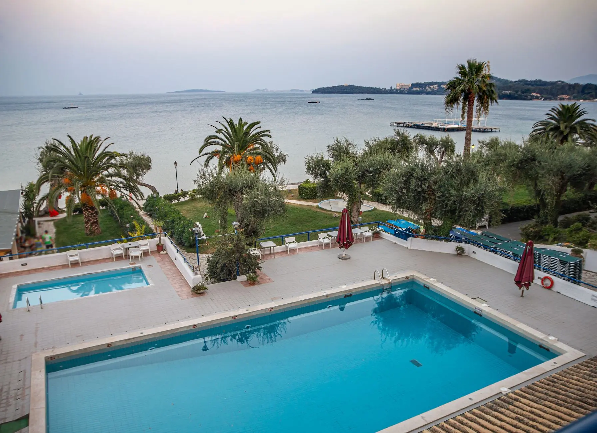

Singer Island on one side of the Intracoastal and the mainland neighborhoods on the other. Two genuinely different pool markets sharing a city line.
Singer Island pools are oceanfront: open to the sky, exposed to constant salt and wind, and often attached to buildings with their own access rules. The mainland neighborhoods are older, more modest, and inland enough that salt stops being the main variable.
Treating those as one service is how island pools end up with corroded equipment nobody warned the owner about, and how mainland customers end up paying for attention their pool does not need. We quote the two sides separately and service them differently, and the report tells you what happened at your pool specifically.
Oceanfront equipment corrodes years earlier than inland. We photograph the pad so you can watch it rather than hear about it once a heater fails.
Singer Island properties often need scheduled access and building coordination. Give us the requirements up front and we work to them.
The mainland neighborhoods are ordinary residential pools and should be priced like it. No reason for island economics to leak across the bridge.
You get a Pool Health Report by email the moment we finish: the readings taken at your pool, what we added, what we did, and photos shot on site that day.
Tap any reading to see its trend
Riviera Beach prices in two bands. Singer Island oceanfront pools sit higher, because salt genuinely means more dosing and closer equipment attention. Mainland pools price like any other residential pool.
Weekly plans start at $129 a month. Tell us which side of the Intracoastal you are on and we can be fairly precise on the phone.
Yes. Many need scheduled access and building coordination, so tell us the building's requirements at the quote and we work to them from the first visit.
Constant salt and wind move the chemistry between visits and corrode equipment far faster. That is more dosing, more testing and closer attention to the pad, and it should be priced honestly rather than hidden.
Plans start at $129 a month, and every account is subject to a price quote by a technician or at the point of sale.